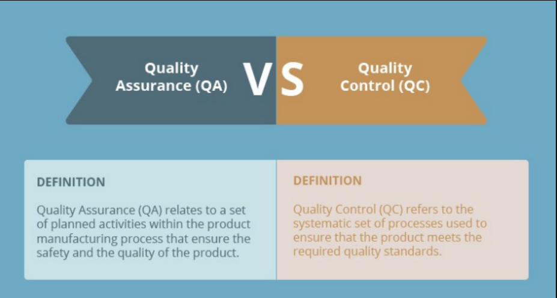
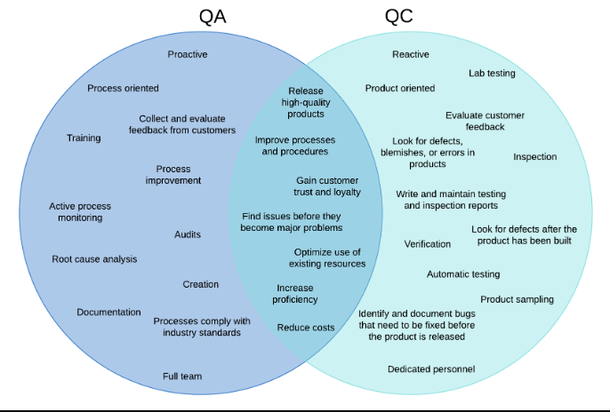

QA-Forum
Improve your Test instinct
QUALITY ASSURANCE
What is quality control (QA)? Quality control is a part of an organization's quality management plan that prevents defects, recognizes defects during product development, and is proactive. What is quality control (QC)? Quality control is also part of an organization's quality management plan that focuses on detecting defects. It ensures that the final product meets all quality and safety standards, and is a reactive process and is completed after quality assurance. Similarities between QA and QC Aside from the differences they both share, which we'll talk about in detail later, QA and QC also have some similarities. Ensuring a high-quality product: Quality assurance and quality control are related and essential to quality management. Both share the same goal of identifying and eliminating defects, and play a crucial role in ensuring customer satisfaction by delivering a high-quality product. Following SOPs: Quality Assurance and Quality Control follow standard policies and procedures established by organizations to ensure and ensure product quality. Significantly reduce problems and costs By detecting and eliminating defects at an early stage, the cost of resolving them later can be reduced. As the products get closer to their delivery stage and after they are delivered to the customers, any defect would cost a considerable amount. QA and QC aim to detect and fix problems before giving them a chance to grow. Improving development and testing processes: Both provide opportunities for organizations to continually learn and become more effective and efficient in delivering high-quality products. They help teams improve in areas like defect identification, requirements gathering, user experience, etc. Key Differences between QA and QC Nature of quality control and quality control Quality control is proactive in nature. It requires measuring processes to reduce the number of defects. Its objective is to prevent defects or errors before they occur during the manufacture of the product. At the same time, Quality Control is reactive. It requires testing the product before releasing it to make sure it meets all standard quality and safety criteria. Quality control is performed after the quality assurance processes are completed. QA is a preventative process while QC is a corrective measure. QA and QC guidance Quality assurance is process oriented; however, quality control is product oriented. QA focuses on taking actions to create a good quality product, and QC focuses on resulting in a quality assured product. Creation (QA) vs. Verification (QC) Quality control involves activities to create high-quality products and define standards for product design, development, distribution, marketing, and sales. Quality control consists of verifying a product before delivering it to customers to guarantee the satisfaction of our customers. The whole team (QA) vs. Dedicated team (QC) The entire team is responsible for quality control activities. Everyone involved in the life cycle of a product must follow the SOPs for quality control. The quality control activities that the team must follow are training, documentation, and review of the entire workforce. A dedicated test team is usually responsible for following the SOP quality control procedure.
Difference Between Quality Assurance And Quality Control
Here is the exact difference between Quality Control and Quality Assurance that one needs to know: Quality Assurance Quality Control It is a process which deliberates on providing assurance that quality request will be achieved. QC is a process which deliberates on fulfilling the quality request. A QA aim is to prevent the defect. A QC aim is to identify and improve the defects. QA is the technique of managing quality. QC is a method to verify quality. QA does not involve executing the program. QC always involves executing the program. All team members are responsible for QA. Testing team is responsible for QC. QA Example: Verification QC Example: Validation. QA means Planning for doing a process. QC Means Action for executing the planned process. Statistical Technique used on QA is known as Statistical Process Control (SPC.) Statistical Technique used on QC is known as Statistical Quality Control (SPC.) QA makes sure you are doing the right things. QC makes sure the results of what you've done are what you expected. QA Defines standards and methodologies to followed in order to meet the customer requirements. QC ensures that the standards are followed while working on the product. QA is the process to create the deliverables. QC is the process to verify that deliverables. QA is responsible for full software development life cycle. QC is responsible for software testing life cycle.